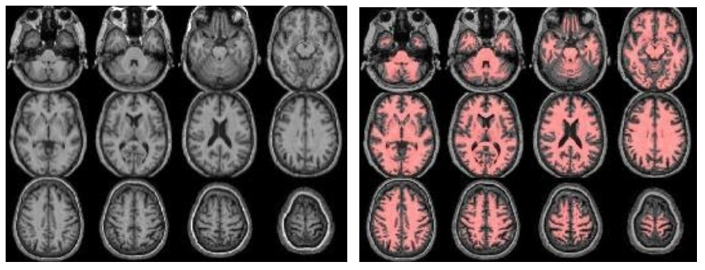
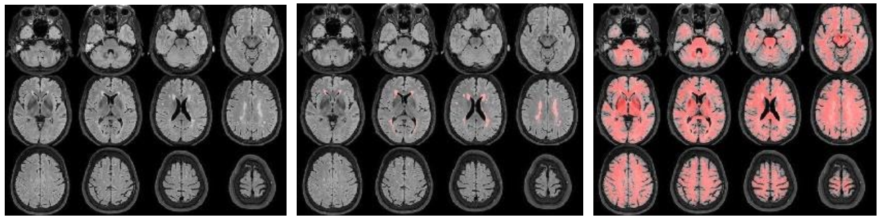
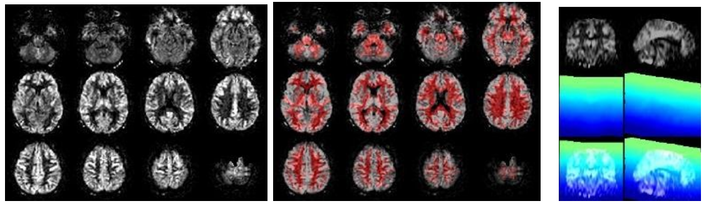
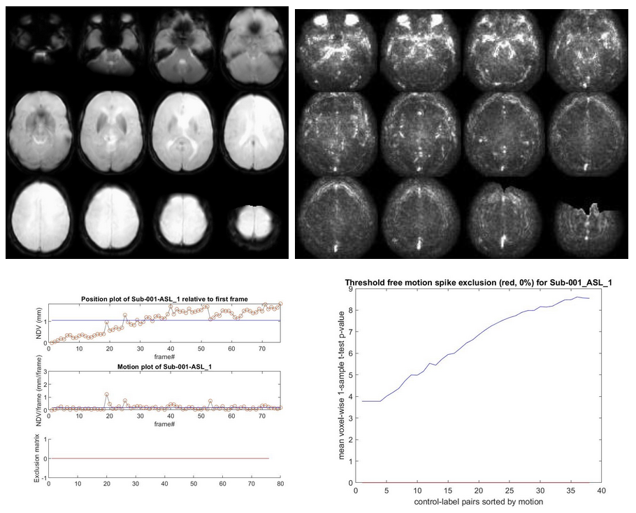
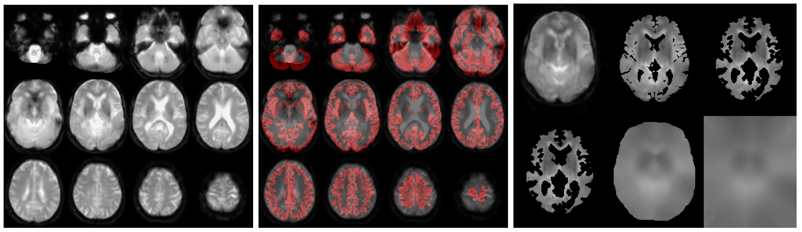

Tutorials (QC)
This document provides a “quick start” walk-through for a dataset processed by ExploreASL. This can be either the attached example dataset (n=1) or a clinical study. It is always recommended to first test the compatibility of ExploreASL with the example dataset (Step 0 below), and to create a file report for steps 1-6, to get accustomed to the data and to make sure that ExploreASL runs properly. Note that ExploreASL is in development, so naming conventions may change, especially when we move to a complete BIDS adherence.
0. Run TestDataSet to check ExploreASL compatibility
First, try to run the test data set. Note that according to good practice, it is important to separate code and data. The user should copy //ExploreASL/External/TestDataSet/ to a directory with read and write permissions outside of the ExploreASL toolbox, and keep the ExploreASL directory structure unchanged. Let’s assume your copy of the TestDataSet is now in the folder /drive/folder/TestDataSet. Open Matlab, go to the directory of ExploreASL, run ExploreASL(‘/drive/folder/TestDataSet’, 0, 1); to process the TestDataSet. The dataPar.json file in the example dataset contains all image processing and quantification parameters that ExploreASL needs. (Note that for your own study, you would need to create this parameter file. See the Processing Tutorial and Processing parameters. If you only want to run a quick test, we recommend to set the Quality parameter within dataPar.json to 0. Please note that in the future, the structure of this test dataset will be replaced by the BIDS format. Also, you can add the same parameters to the JSON sidecars of the ASL NIfTI files, which will allow processing ASL scans with different parameters within the same study. In the case of a multi-center study, and/or multiple sequences or scanner updates, the JSON sidecars allow to have different ASL parameters within a single study.
Upon successful completion of the processing, ExploreASL creates a result file (//Population/Stats/ median_qCBF_(Native|Standard)Space_total_GM_n=1_*_PVC0.tsv). Verify that the GM CBF here (without partial volume (PV) correction, i.e. PVC0)) is approximately 65 mL/100g/min. If this file does not exist, then there could be a problem with ExploreASL compatibility. If the file exists and values are the same as reported here, then your software and hardware are ExploreASL compatible. In case ExploreASL processing runs for the example data set and not for other datasets then the problem is probably data related and not compatibility related.
When you perform this walkthrough on your own data, there are three first main cases to note:
- Data completeness, note down any data that was not imported or somehow not got processed;
- Proper processing, check visually whether the processing went well, e.g. nicely segmented and registered;
- Large anatomical deviations, check visually if there are large anatomical variations that can make subjects outliers
1. Data inclusion
>>> ExploreASL('/drive/folder/TestDataSet',0,1)
ExploreASL will run the processing pipeline...
==============================================================================================
________ __ ______ ______ __
/ | / | / \ / \ / |
########/ __ __ ______ ## | ______ ______ ______ /###### |/###### |## |
## |__ / \ / | / \ ## | / \ / \ / \ ## |__## |## \__##/ ## |
## | ## \/##/ /###### |## |/###### |/###### |/###### |## ## |## \ ## |
#####/ ## ##< ## | ## |## |## | ## |## | ##/ ## ## |######## | ###### |## |
## |_____ /#### \ ## |__## |## |## \__## |## | ########/ ## | ## |/ \__## |## |_____
## |/##/ ## |## ##/ ## |## ##/ ## | ## |## | ## |## ##/ ## |
########/ ##/ ##/ #######/ ##/ ######/ ##/ #######/ ##/ ##/ ######/ ########/
## |
## |
##/
======================================= ExploreASL Settings ==================================
Dataset Root /drive/folder/TestDataSet
Import Modules
Process Modules STRUCTURAL ASL POPULATION
bPause False
iWorker 1
nWorkers 1
==============================================================================================
ExploreASL v1.9.0 initialized ...
Automatically defining sessions...
======================================= Additional Settings ==================================
1 scans - 0 exclusions, resulting in 1 scans of:
Longitudinal timePoint 1 = 1 scans - 0 exclusions = 1 scans
ASL sessions: 1
Ancillary data, sets: 4 sets are defined for 1 "SubjectsSessions"
Set 1 = "session" options "ASL_1", codes for paired data
Set 2 = "LongitudinalTimePoint" options "TimePoint_1", codes for paired data
Set 3 = "SubjectNList" options "SubjectNList", codes for paired data
Set 4 = "Site" options "SingleSite", codes for two-sample data
x.D.ROOT /drive/folder/TestDataSet
x.settings.DELETETEMP 1 (delete temporary files)
x.settings.Quality 1 (0 = fast try-out; 1 = normal high quality)
You should obtain a similar initial screen showing which subjects and scans are found to be processed (how many exclusions, how many subjects for each time point etc.), as well as potentially included co-variates (e.g. site, age, cohort, sex). Note that we run the pipeline on low quality (x.Quality=0): while this will provide poorer results (segmentation, registration, etc) this will allow us to quickly test the full pipeline. On a relatively new computer, the full pipeline should run either within 5-10 min (x.Quality=0) or 30-60 min (x.Quality=1).
2. Missing files
Check the files //ROOT/Missing*Files.csv. These provide an overview of any missing files. Files can either be missing when they are not imported (Missing*NativeFiles.csv, for native space files), or when they are not processed (mainly Missing*MNIFiles.csv, for MNI space files). If no files are specified in these files, or they do not exist, this means that there were no missing files.
3. QC structural module
The structural module processes the anatomical (T1-weighted, T1w) images, to provide segmentations/partial volume (PV) maps and for spatial normalization to MNI space. Optionally, if FLAIR images exist, these are used to correct the white matter hyperintensities (WMH) on the T1w images. Check (from left to right):

//Population/T1Check/Tra_Src_rT1_*.jpgfor T1w quality, structural anomalies, normalization to MNI//Population/T1Check/Tra_Reg_rT1_*.jpgsame as previous, but after lesion filling (if FLAIR exists)//Population/T1Check/Tra_Seg_rT1_*.jpgfor T1w segmentation (WM segmentation in red)//Population/TissueVolume/Tissue_volume_*.tsvfor the GM, WM and CSF volumes- Note that all QC images are prefixed with ‘Tra_’ (transversal/axial)/ ‘Cor_’ (coronal) or ‘Sag_’ (sagittal) denoting the plane of the slices.
Check, if FLAIR exists (from left to right):

//Population/FLAIRCheck/Tra_Src_rFLAIR_*.jpgfor FLAIR quality, structural anomalies//Population/FLAIRCheck/Tra_Reg_rFLAIR_*reg.jpgfor WMH segmentation, compare with previous//Population/FLAIR_REGDIR/Tra_Seg_rFLAIR_*reg.jpgfor registration FLAIR->T1w (red=T1w WM segmentation)//Population/TissueVolume/WMH_LST_*.tsvfor the WMH Total Lesion Volume (TLV) and number (N) of WMH
For a population data quality overview (if nScans>1), inspect //Population/Templates/Template_mean_T1.nii, as well as //Population/Templates/Template_sd_T1.nii for the between-subject variation. Do the same for pGM and pWM, and FLAIR and WMH_SEGM if available.
4. DICOM values
//Population/DICOMparameters/ASL4D_quantification_parameters.csv and //Population/DICOMparameters/M0_quantification_parameters.csv summarize the data in the files //ROOT/SubjectName/ASL_1/ASL4D_parms.mat and //ROOT/SubjectName/ASL_1/M0_parms.mat, including the different DICOM header parameters that are imported and can be used in the quantification process. It is important to check that the TR, TE, and scale slopes are comparable for all scans on a single scanner. If not, they allude to situations where the scans were performed with not completely similar protocols, due to e.g. a software update, or use of different scanners. Ignoring this can lead to undesired variance in the whole-brain CBF quantification.
5. QC of ASL module
The ASL module processes the perfusion (ASL, M0) images, from motion correction to registration to quantification and PV correction. Check for general ASL quality, vascular artifacts, good GM-WM contrast, WM-CSF contrast, artifacts on the temporal standard deviation (SD) images, geometrical distortion, and signal drop out from EPI susceptibility artifacts, whole-brain coverage (slice_gradient). Check also for registration to standard space, all images should be in the same position/orientation, i.e. meaning that you always see the same slices, with the same angulation. Check for motion artifacts as a bright halo around the CBF and temporal SD images. In a study QC report, you could show some worst, median, and best examples. Check (from left to right):
//Population/ASLCheck/Tra_qCBF_untreated_*ASL_*.jpgfor the CBF images without vascular treatment (qCBF*)//Population/ASLCheck/Tra_Reg_pWM_qCBF_untreated_*ASL_*.jpgfor the ASL->T1w registration (T1w WM segmentation in red)//Population/SliceGradientCheck/SliceGradient_*.jpgfor the orientation of native slices in MNI space

If time-series exist (from left to right):

//Population/RawSourceIMCheck/Tra_mean_control_*.jpgfor the inspection of the average ASL source image//Population/SD_SNR/Tra_SD*ASL_*.jpgfor the temporal SD image. This should be a smooth, noisy image, with only vascular peaks.//Population/MotionASL/rp_*ASL*motion.jpgto inspect subject motion (net displacement vector)//Population/MotionASL/rp_*ASL*threshold_free_spike_detection.jpgto inspect the performance of ENABLE
If an M0 scan exists (from left to right):

//Population/M0Check/Tra_noSmooth_M0_*_ASL*.jpgfor the inspection of M0//Population/M0_Reg_ASL/Tra_Reg_pGM_noSmooth_M0_*ASL*.jpgfor the M0->T1w registration (pGM in red)//Population/M0_Reg_ASL/M0_im_proc_*.jpgfor processing of M0 into a smooth bias field (masking & smoothing). Verify that the mask correctly removes the CSF & extracranial signal, to avoid smoothing of this into the M0 bias field.
If population data exists (i.e. nScans>1):
For a population data quality overview, inspect //Population/Templates/Template_mean_CBF.nii, as well as //Population/Templates/Template_sd_CBF.nii for the between-subject variation. Do the same for the other QC images if available.
6.1 Qualitative analysis: visual inspection in detail
A) Reproduce some of the above JPG images by loading the NIfTIs, creating an overlay, and scrolling through
To go through the images in more detail, we advise using Chris Rorden’ mricron32.exe, which is a very light-weight, flexible, and easy-to-use tool. Please go to the population folder, and repeat the visual QC above in detail by opening the standard space NIfTIs. E.g., start with the original T1, resliced into standard space (rT1_ORI*.nii(.gz)), and then overlay the gray matter (GM) and/or white matter (WM) segmentations (rc1T1*.nii(.gz) and rc2T1*.nii(.gz) respectively. You do this, by keeping the original T1 NIfTI open, in the top menu click ‘Overlay’ - ‘Add’ and select the NIfTI you want to overlay. Then you can select a color at the right drop-down menu. You can change the transparency of the overlay by ‘Overlay’ - ‘Transparency on background’. Then, keep the same NIfTI open, and start a second instance of mricron32, and load another NIfTI there, e.g. the FLAIR (rFLAIR*.nii(.gz)), note how you can scroll through both NIfTIs in sync. (if this doesn’t work, you need to enable ‘View’ - ‘Yoke’ at both MRIcron instances). With the DEL key, you can activate the crosshair. You can layout the two MRIcron instances side-to-side by using the Windows key-Left Windows key-Right combination.
B) Relate the ASL CBF image to the structural T1w image
Load the ASL image (qCBF*.nii(.gz) and notice how much lower its resolution is compared to the structural/anatomical images. Then open the T1w and ASL images side to side, to scroll through them in sync, and notice how this allows you to identify the structural reference of your ASL perfusion signal. Can you observe structural contrast in the ASL image? Do you see that the CBF is indeed higher in the GM than in the WM?
C) Relate the temporal SD image to the structural T1w image
Now do the same with the temporal SD image (SD*.nii.(gz), not SD_control*), open it side-to-side with the T1w image. This image shows the temporal variations of the ASL signal. Where does this come from?
D) Overlay the CBF image over the T1w image
To create a nice visualization, open the T1w NIfTI, and then load the ASL CBF image as an overlay. Then choose a nice color scale, proper transparency, and play with the low and high-intensity thresholds, to create an overlay of the CBF image in ‘false colors’ over the grayscale anatomical NIfTI. Again, notice the relatively low resolution (i.e. blurriness/smooth appearance) of the ASL image. Try to make a really nice overlay!
6.2 Quantitative analysis: create region-of-interest (ROI)-based statistics
E) Check the default, basic ROI overview of the data in //Population/Stats/*.tsv. These filenames are built up as:
| Values | Description |
|---|---|
(mean\|median\|spatialCoV) |
The statistic: either the mean, median, or coefficient of variance over the ROI |
(qCBF_untreated) |
The input data (this can be anything, e.g. M0, pGM, FLAIR) |
(TotalGM\|DeepWM\|MNI_structural) |
The applied atlas, which specifies which ROIs to use |
(n=x) |
The number of subjects in the analysis (these are rows in the TSV file) |
(07-Mar-2019) |
The date of the analysis |
PVC(0\|2) |
Partial volume correction (PVC) options: 0 (no PVC), 2 (two-compartment, classical PVC) |
In the Stats folder's files, if the same T1w is used for multiple runs (ASL_1, ASL_2 etc.), the values concerning the structural derivatives only (e.g. volumetrics and ratio) will be printed only for the first run.
Start by opening ‘mean_qCBF_untreated_MNI_structural_n=1_07-Mar-2019_PVC2.tsv’. Notice that columns A to L are the ‘covariates’, whereas the remaining columns are the results of the ROI analysis. See the names of the MNI_structural atlas (Caudate, Cerebellum, Frontal, etc), and notice how from each of them, 3 columns are created, with the B (bilateral), L (left), or R (right) part of the ROI.
F) Run an ROI analysis with a custom atlas
1) Pick an atlas
Go to folder /ExploreASL/External/AtlasesNonCommercial and choose an atlas. Open the NIfTI file of the atlas, and notice how it has a label number for each ROI: you can see this number in the lower-left corner of MRIcron. By overlaying the atlas over the T1w of the subject, and creating a nice color scheme and transparency (e.g. color scheme ‘NIH’ and 60% transparency), and can see if you like the ROIs of this atlas for your analysis. Suggestions are ‘Hammers’, ‘HOcort_CONN’ (the CONN-toolbox version of the Harvard-Oxford atlas, cortical part), or HOsub_CONN (same as previous but subcortical part). Note how each NIfTI file of the atlases have their own .tsv file, which specifies the name of the ROIs (the column number corresponds to the label number in the NIfTI file). Remember the full path of the atlas NIfTI. Note that you can also provide your own atlas, as long as the ROIs contain the same label numbers in the NIfTI as in the .tsv file.
2) Pick a data type
Pick the data type you want to perform your ROI analysis on, e.g. qCBF (see other available data types in the Population folder).
3) Restart ExploreASL
For this, we first need to restart ExploreASL, but without running the whole analysis (since we already did this). Open Matlab, initialize ExploreASL using the command [x] = ExploreASL_Initialize;. To process a dataset you can use the ExploreASL function. Tell ExploreASL which dataset to load, by providing the path of your data parameter file to ExploreASL by running [x] = ExploreASL_(‘drive/folder/dataPar.son’). Notice how this loads the dataset without any processing (i.e. without running the structural, ASL, or any other modules).
4) Run the ROI analysis, by typing in Matlab:
x.S.InputDataStr = 'qCBF';
% (qCBF can be replaced by another datatype)
x.S.InputAtlasPath = '/ExploreASL/External/AtlasesNonCommercial/HOcort_CONN.nii';
% (replace this by the atlas of your choice)
xASL_wrp_GetROIstatistics(x);
% (Note that this may provide a warning that x.Sequence is not defined yet,
% if you haven't predefined any ASL sequence yet (which should go semi-automatically
% with your own data). x.Sequence should contain your ASL sequence, e.g. x.Sequence
% = ‘2D_EPI’ (in the case of the TestDataSet))
E) Check the ROI analysis
Repeat the steps in (E) above, but then with the correct atlas name. Note how the ROIs (columns M and upwards) are now the bilateral (B), left (L) and right (R) parts of the atlas you selected. Recommendable software
Free software that is recommendable, includes:
- ExploreASL GUI to work with ExploreASL using a graphical user interface
- MRIcron, to open NIfTIs outside of Matlab/ExploreASL
- bids-matlab to work with files in BIDS format
When not indicated otherwise, installation settings should be kept on default.